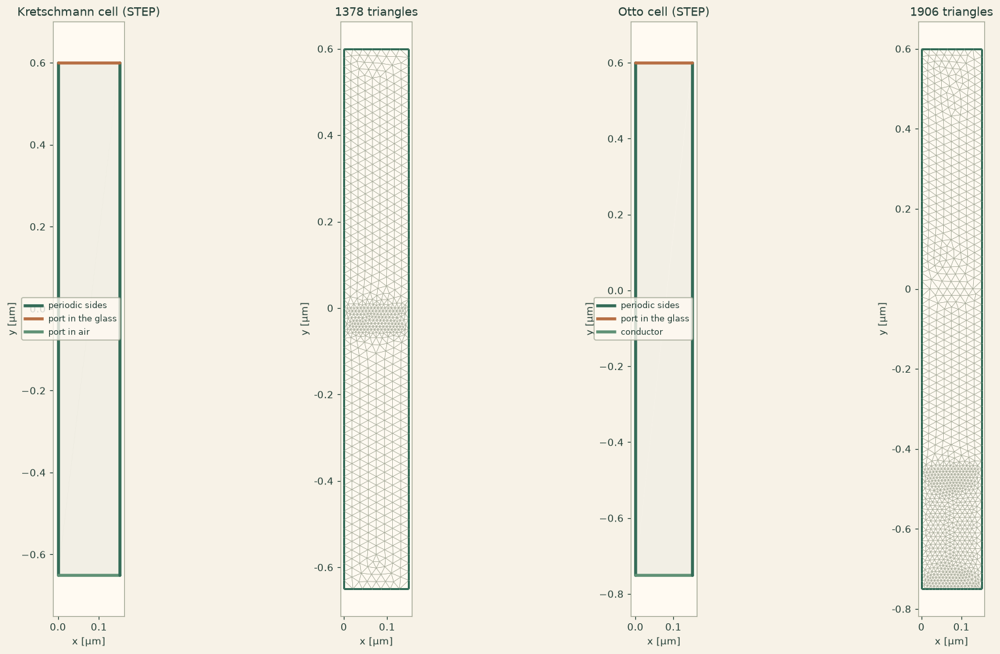

Docs › Examples › Surface plasmon excitation in the Otto and Kretschmann configurations
Plasmonics, wave optics · 2D
Surface plasmon excitation in the Otto and Kretschmann configurations
Light of 633 nm totally reflected in a glass prism excites a surface plasmon on gold through a 50 nm film (Kretschmann) or across a 450 nm air gap (Otto).
Run locally with OneSimulation. The example downloads are free. Running them requires an activated runtime. Runtime Alpha 0.2.1a7 · CPython 3.13 on macOS (Apple Silicon), Ubuntu 22.04 (x86-64), and Windows x64. Installation and activation · View pilot plans. Scope of the reference checks.

What it computes
OneSimulation cuts one period of each layered coupler from STEP plates drawn in micrometres, scales the meshes to metres and solves the out-of-plane field for p and s polarization, gold being a Drude-Lorentz metal; Bloch-periodic sides set the angle of incidence and a Floquet port in the glass feeds the wave and measures the reflected power. The script that builds the STEP files comes with the notebook.
What it checks
Over 49 angles from 36 to 70 deg the reflectance agrees with the exact three-layer formula to 3.8e-5 (Kretschmann, p) and 1.1e-5 (Otto, p), s polarization to 6e-6; the plasmon dips lie at 44.50 deg (R = 0.0523) and 43.75 deg (R = 0.0045) as in the exact curves.
Geometry
Save the STEP files surface_plasmon_prism_coupling_kretschmann.step, surface_plasmon_prism_coupling_kretschmann_glass.step, surface_plasmon_prism_coupling_kretschmann_gold.step, surface_plasmon_prism_coupling_otto.step, surface_plasmon_prism_coupling_otto_glass.step, surface_plasmon_prism_coupling_otto_gold.step next to the notebook before running it.


The geometry script
The script surface_plasmon_prism_coupling_geometry.py builds the geometry with the CAD objects of OneSimulation and writes the files. Change a dimension there, run it, and run the notebook again.
"""Geometry of the OneSimulation example "Surface plasmon excitation in the Otto and Kretschmann configurations".
Builds, as thin plates with the CAD objects of OneSimulation and in micrometres, one period
(0.15 um wide) of the two layered prism couplers at 633 nm:
* Kretschmann: surface_plasmon_prism_coupling_kretschmann.step (0.6 um of glass, a 50 nm gold film,
0.6 um of air; x_min and x_max periodic, y_max the port in the glass, y_min the port in the air)
with its parts _kretschmann_glass.step and _kretschmann_gold.step;
* Otto: surface_plasmon_prism_coupling_otto.step (0.6 um of glass, a 450 nm air gap, 0.3 um of gold;
y_max the port in the glass, y_min the bottom of the gold) with _otto_glass.step and _otto_gold.step.
"""
from onesim.cad.d3 import Box
period, glass, depth = 0.15, 0.6, 0.1
layers = {
"kretschmann": (("gold", 0.05), ("air", 0.6)),
"otto": (("air", 0.45), ("gold", 0.3)),
}
for name, ((first, a), (second, b)) in layers.items():
total = glass + a + b
Box(length=period, width=total, height=depth, origin=(0, -(a + b), 0)).save(
f"surface_plasmon_prism_coupling_{name}.step"
)
Box(length=period, width=glass, height=depth, origin=(0, 0, 0)).save(
f"surface_plasmon_prism_coupling_{name}_glass.step"
)
bottom = -a if first == "gold" else -(a + b)
Box(
length=period,
width=a if first == "gold" else b,
height=depth,
origin=(0, bottom, 0),
).save(f"surface_plasmon_prism_coupling_{name}_gold.step")The notebook
The complete notebook, cell by cell. Run it to produce the figures and the comparison printout.
A surface plasmon on a gold-air interface has a larger wavenumber than light in air, \(\mathrm{Re}\,\beta>k_0\), so a plane wave from the air cannot excite it. In glass of index \(n_p=1.515\) the tangential wavenumber \(k_x=n_pk_0\sin\theta\) can reach \(\beta\) beyond the critical angle; the totally reflected wave is then evanescent on the other side and couples into the plasmon by tunnelling:
- Kretschmann: a gold film of 50 nm on the prism; the plasmon on its far side (gold-air) is excited through the metal,
- Otto: an air gap of 450 nm between the prism and a gold block; the plasmon on the gold surface is excited across the gap.
At the coupling angle \(n_p\sin\theta\approx\mathrm{Re}\sqrt{\varepsilon_m/(\varepsilon_m+1)}\) the reflected p-polarized (TM) power drops sharply; s-polarized (TE) light has no surface plasmon and stays totally reflected. Gold is the Drude-Lorentz model of Rakić et al. (\(\hbar\omega_p=9.03\) eV, \(f_0=0.760\), \(\hbar\Gamma_0=0.053\) eV and five interband oscillators), \(\varepsilon_m=-9.81+1.96\mathrm i\) at 633 nm.
The layers are infinite, so one period of 0.15 um (much less than half a wavelength in glass) suffices: Bloch-periodic sides carry \(k_x\) and only the specular order propagates. The section solves \(H_z\) for p and \(E_z\) for s polarization.
| boundary | Kretschmann | Otto |
|---|---|---|
x_min, x_max | Bloch periodic, \(k_x=n_pk_0\sin\theta\) | Bloch periodic |
y_max (glass) | Floquet port, incident wave | Floquet port, incident wave |
y_min | Floquet port in air | perfect conductor 0.3 um deep in the gold |
Reference (E. Kretschmann and H. Raether, Z. Naturforsch. 23a, 2135 (1968); A. Otto, Z. Phys. 216, 398 (1968); M. Born and E. Wolf, Principles of Optics, 7th ed., §1.6.4; A. D. Rakić et al., Appl. Opt. 37, 5271 (1998)). For three media with \(k_{z,i}=\sqrt{\varepsilon_ik_0^2-k_x^2}\) and the middle layer of thickness \(d\),
The STEP parts are drawn in micrometres, the unit that suits a film of 50 nm; scaled brings the meshes to metres, so the model is solved in SI units and the plots show micrometres again.
import numpy as np
from onesim.cad.exchange import load
from onesim.materials import VACUUM_PERMEABILITY, VACUUM_PERMITTIVITY
from onesim.materials.electromagnetic import (
DrudeLorentzElectromagneticMaterial,
IsotropicElectromagneticMaterial,
LorentzOscillator,
RegionwiseElectromagneticMaterial,
electronvolts_to_angular_frequency,
)
from onesim.meshing import PeriodicPair, TriangularMesher, scaled
from onesim.numerics import Numerics
from onesim.numerics.fem import FiniteElement, Lagrange
from onesim.numerics.linear import ComplexSparseDirect
from onesim.physics.electromagnetics import (
BlochPeriodicBoundary,
FloquetPort,
FrequencyDomainMaxwell,
PerfectElectricConductor,
diffraction_efficiencies,
)
from onesim.simulation import Problem, Simulation
from onesim.visualization import plots, theme
theme.set()
wavelength, prism = 633e-9, 1.515
light = 1 / np.sqrt(VACUUM_PERMEABILITY * VACUUM_PERMITTIVITY)
frequency, k0 = light / wavelength, 2 * np.pi / wavelength
plasma, oscillators = 9.03, [
(0.024, 0.241, 0.415),
(0.010, 0.345, 0.830),
(0.071, 0.870, 2.969),
(0.601, 2.494, 4.304),
(4.384, 2.214, 13.32),
]
gold = DrudeLorentzElectromagneticMaterial(
plasma_frequency=electronvolts_to_angular_frequency(np.sqrt(0.760) * plasma),
collision_rate=electronvolts_to_angular_frequency(0.053),
oscillators=tuple(
LorentzOscillator(
strength=f * plasma**2 / w**2,
resonance_frequency=electronvolts_to_angular_frequency(w),
damping=electronvolts_to_angular_frequency(g),
)
for f, g, w in oscillators
),
)Geometry and mesh
load reads both cells with their glass and gold; section cuts them at half thickness. The periodic sides are meshed alike (periodic_pairs); quadratic triangles of 20 nm, and 8 nm in the gold, where the field decays within 25 nm; scaled(..., "um") turns the micrometres of the drawing into metres.
configurations = ("kretschmann", "otto")
cells, meshes = {}, {}
for name in configurations:
parts = {
part: load(f"surface_plasmon_prism_coupling_{name}{part}.step").section(
(0, 0, 1), origin=(0, 0, 0.05)
)
for part in ("", "_glass", "_gold")
}
cells[name] = parts[""]
meshes[name] = scaled(
TriangularMesher(
target_size=0.02,
embedded_regions=(
parts["_glass"].named("glass"),
parts["_gold"].named("gold"),
),
region_sizes={"gold": 0.008},
periodic_pairs=(
PeriodicPair(parts[""].boundaries.x_min, parts[""].boundaries.x_max),
),
).generate(parts[""]),
"um",
)
fig = plots.figure(1, 4, size=(16, 9))
for index, name in enumerate(configurations):
sides = cells[name].boundaries
plots.geometry(
cells[name],
selection={
"periodic sides": sides.x_min | sides.x_max,
"port in the glass": sides.y_max,
"port in air" if name == "kretschmann" else "conductor": sides.y_min,
},
labels=False,
title=f"{name.capitalize()} cell (STEP)",
length_unit="um",
drawing_unit="um",
ax=fig[2 * index],
)
plots.mesh(
meshes[name],
groups=("all",),
legend=False,
title=f"{meshes[name].cell_count} triangles",
length_unit="um",
ax=fig[2 * index + 1],
)
plots.show()Model
For every angle the Bloch wavevector of the side pair is \(n_pk_0\sin\theta\) and the port in the glass feeds the plane wave; diffraction_efficiencies returns the reflected power at that port relative to the incident power.
material = RegionwiseElectromagneticMaterial(
{
"glass": IsotropicElectromagneticMaterial(relative_permittivity=prism**2),
"gold": gold,
},
default=IsotropicElectromagneticMaterial(),
)
numerics = Numerics(
spatial=FiniteElement(element=Lagrange(order=2)),
linear_solver=ComplexSparseDirect(),
)
models = {
(name, polarization): FrequencyDomainMaxwell(
domain=cells[name].domain(),
frequency=frequency,
material=material,
polarization=polarization,
phasor_convention="exp(-i*omega*t)",
amplitude_convention="peak",
)
for name in configurations
for polarization in ("Hz", "Ez")
}
reflect = lambda name, polarization, angle: diffraction_efficiencies(
Simulation(
problem=Problem(
name=name,
geometry=cells[name],
physics=(models[(name, polarization)],),
boundary_conditions=(
BlochPeriodicBoundary(
physics=models[(name, polarization)],
pair=PeriodicPair(
cells[name].boundaries.x_min, cells[name].boundaries.x_max
),
wavevector=(prism * k0 * np.sin(np.radians(angle)), 0.0, 0.0),
),
FloquetPort(
physics=models[(name, polarization)],
boundary=cells[name].boundaries.y_max,
incident_amplitude=1.0,
),
(
FloquetPort(
physics=models[(name, polarization)],
boundary=cells[name].boundaries.y_min,
)
if name == "kretschmann"
else PerfectElectricConductor(
physics=models[(name, polarization)],
boundary=cells[name].boundaries.y_min,
)
),
),
),
mesh=meshes[name],
numerics=numerics,
).solve_stationary(),
models[(name, polarization)],
)[(0, 0)]
angles = np.concatenate(
(
np.arange(36.0, 41.0, 1.0),
np.arange(41.0, 48.01, 0.25),
np.arange(49.0, 70.1, 1.5),
)
)
computed = {
(name, polarization): np.array(
[reflect(name, polarization, angle) for angle in angles]
)
for name in configurations
for polarization in ("Hz", "Ez")
}Results
The exact reflectance of the three media, with the gold permittivity of the same model.
def multilayer(angle, layers, thickness, polarization):
kx = prism * k0 * np.sin(np.radians(angle))
kz = [np.sqrt(e * k0**2 - kx**2 + 0j) for e in layers]
r = [
(
(
(layers[j] * kz[i] - layers[i] * kz[j])
/ (layers[j] * kz[i] + layers[i] * kz[j])
)
if polarization == "Hz"
else (kz[i] - kz[j]) / (kz[i] + kz[j])
)
for i, j in ((0, 1), (1, 2))
]
return (
abs(
(r[0] + r[1] * np.exp(2j * kz[1] * thickness))
/ (1 + r[0] * r[1] * np.exp(2j * kz[1] * thickness))
)
** 2
)
metal = gold.relative_permittivity_at(frequency)
stacks = {
"kretschmann": ([prism**2, metal, 1.0], 50e-9),
"otto": ([prism**2, 1.0, metal], 450e-9),
}
exact = {
(name, polarization): np.array(
[multilayer(angle, *stacks[name], polarization) for angle in angles]
)
for name, polarization in computed
}
coupling = np.degrees(np.arcsin(np.sqrt(metal / (metal + 1)).real / prism))
print(
f"gold at 633 nm: eps = {metal.real:.3f}{metal.imag:+.3f}i; critical angle {np.degrees(np.arcsin(1 / prism)):.2f} deg, "
f"plasmon matching n_p sin(theta) = Re(n_spp) at {coupling:.2f} deg"
)
print(
"\nconfiguration polarization max |R - R_exact| dip: angle R exact: angle R"
)
for (name, polarization), values in computed.items():
i, j = np.argmin(values), np.argmin(exact[(name, polarization)])
print(
f"{name:14s} {'p (H_z)' if polarization == 'Hz' else 's (E_z)':12s} {np.max(np.abs(values - exact[(name, polarization)])):17.1e} "
f"{angles[i]:8.2f} {values[i]:.4f} {angles[j]:8.2f} {exact[(name, polarization)][j]:.4f}"
)Figure
Reflectance against the angle of incidence for both couplers and both polarizations, with the exact multilayer curves dashed.
fig = plots.figure(1, 2, size=(16, 6))
for panel, name in zip(fig, configurations):
plots.line(
angles,
{"p (TM)": computed[(name, "Hz")], "s (TE)": computed[(name, "Ez")]},
reference={"p (TM)": exact[(name, "Hz")], "s (TE)": exact[(name, "Ez")]},
vlines={
"critical angle": np.degrees(np.arcsin(1 / prism)),
"plasmon matching": coupling,
},
ylimits=(0, 1.05),
xlabel="angle of incidence in the glass [deg]",
ylabel="reflectance",
title=f"{name.capitalize()} configuration (dashed: exact)",
legend="lower right",
ax=panel,
)
plots.show()Going further
Change the film thickness or the gap in surface_plasmon_prism_coupling_geometry.py: the dip is deepest when the radiative loss of the plasmon into the prism equals its absorption in the gold (critical coupling), near 45 nm and 450 nm here. A thin dielectric layer on the gold shifts the coupling angle - the principle of surface plasmon resonance sensors.